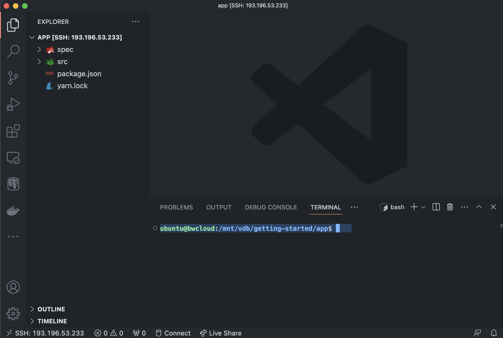
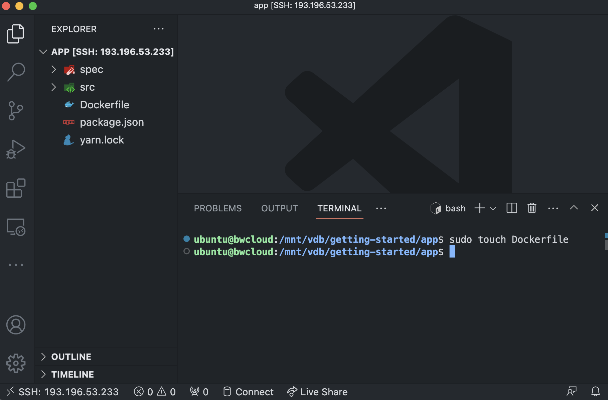
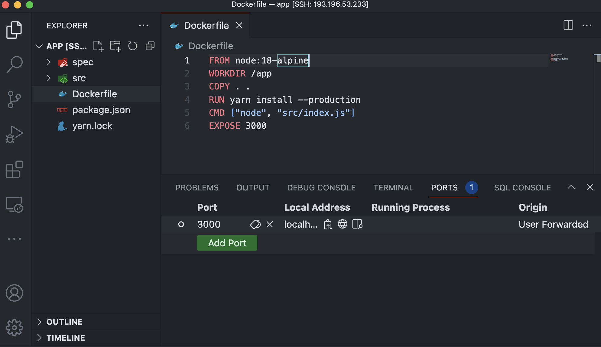
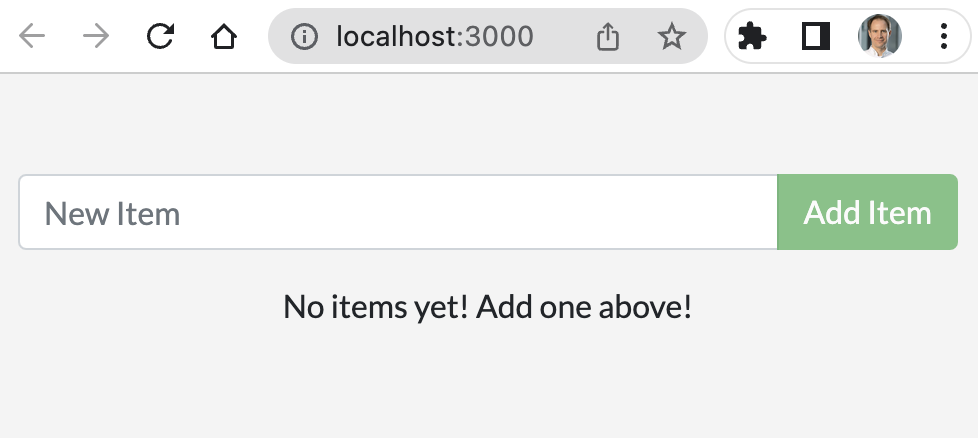

12 Containerize the application
12.1 Create Dockerfile
To build a container image, you’ll need to use a Dockerfile.
A Dockerfile is simply a text-based file with no file extension that contains a script of instructions. Docker uses this script to build a container image.
- In VS Code, open the integrated terminal (“Terminal” > “New Terminal”).

- Use the following command to create an empty file named Dockerfile.
sudo touch Dockerfile
- In VS Code, open
Dockerfile, add the following contents and save the file:
# syntax=docker/dockerfile:1
FROM node:18-alpine
WORKDIR /app
COPY . .
RUN yarn install --production
CMD ["node", "src/index.js"]
EXPOSE 3000This Dockerfile is used to create a Docker image for our Node.js application. Let’s go through each line and explain its purpose:
FROM node:18-alpine
This line specifies the base image for the Docker image. It uses the node:18-alpine image, which is based on Alpine Linux (a lightweight Linux distribution) and includes Node.js version 18.
WORKDIR /app
This line sets the working directory inside the Docker image to /app. Any subsequent commands will be executed in this directory.
COPY . .
This line copies the contents of the current directory (where the Dockerfile is located) into the /app directory of the Docker image. It includes all the files and directories required for the Node.js application.
RUN yarn install --production
This line executes the command yarn install –production within the Docker image. It installs the dependencies specified in the package.json file of the application. The –production flag ensures that only production dependencies are installed, excluding any development-specific packages.
CMD ["node", "src/index.js"]
This line specifies the command to run when the Docker container is started based on this image. It sets the entrypoint to node src/index.js, which means that the Node.js application’s entry file is src/index.js. This command will be executed when the container starts.
EXPOSE 3000
This line informs Docker that the container will listen on port 3000. It does not publish the port to the host machine but rather serves as a documentation for developers or users who may run the container and need to know which port to access the application. In summary, this Dockerfile sets up a containerized environment for a Node.js application. It installs the production dependencies, specifies the entrypoint for the application, and indicates that it will listen on port 3000.
12.2 Build container image
Build the container image using the following commands:
- Build the container image using the following commands:
sudo docker build -t getting-started .The docker build command uses the Dockerfile to build a new container image. You might have noticed that Docker downloaded a lot of “layers”. This is because you instructed the builder that you wanted to start from the node:18-alpine image. But, since you didn’t have that on your machine, Docker needed to download the image.
After Docker downloaded the image, the instructions from the Dockerfile copied in your application and used yarn to install your application’s dependencies. The CMD directive specifies the default command to run when starting a container from this image.
Finally, the -t flag tags your image. Think of this simply as a human-readable name for the final image. Since you named the image getting-started, you can refer to that image when you run a container.
The . at the end of the docker build command tells Docker that it should look for the Dockerfile in the current directory.
12.3 Start app container
Now that you have an image, you can run the application in a container. To do so, you will use the docker run command.
- Start your container using the docker run command and specify the name of the image you just created:
sudo docker run -dp 3000:3000 getting-startedYou use the -d flag to run the new container in “detached” mode (in the background).
You also use the -p flag to create a mapping between the host’s port 3000 to the container’s port 3000. Without the port mapping, you wouldn’t be able to access the application.
12.4 Forward a port
Next, we need to temporarily forward a new port for the duration of the session. Select “Forward a Port” from the Command Palette (Windows: F1; Mac: ⇧+⌘+P) and insert the port number:
3000This will open the “PORTS” view. In the column “Local Address”, click on
localhost:3000and choose the globe 🌐 icon to open the web browser.

- This should open your web browser to http://localhost:3000 and you should see your app.
12.5 Test your app

Go ahead and add an item or two and see that it works as you expect. You can mark items as complete and remove them. Your frontend is successfully storing items in the backend.
At this point, you should have a running todo list manager with a few items.
12.6 View container
If you take a quick look at your containers, you should see at least one container running that is using the getting-started image and on port 3000.
- Run the following
docker pscommand in your terminal to list your containers.
sudo docker ps12.6.1 Next steps
In the previous section, you learned the basics about creating a Dockerfile to build a container image. Once you built an image, you started a container and saw the running app.
Next, you’re going to make a modification to your app and learn how to update your running application with a new image. Along the way, you’ll learn a few other useful commands.